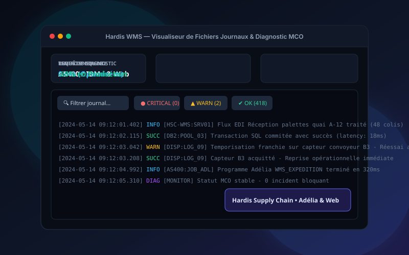

Entreprise • Hardis Supply Chain

Hardis WMS — Visualiseur de Journaux & MCO
Outil web interne de supervision et diagnostic des fichiers journaux sur AS400 / IBM i. Optimisation SQL DB2 et réduction drastique des temps de résolution d'incidents critiques en production.
Adélia (L4G)
AS400 / IBM i
DB2 SQL
HTML5 / JS
MCO